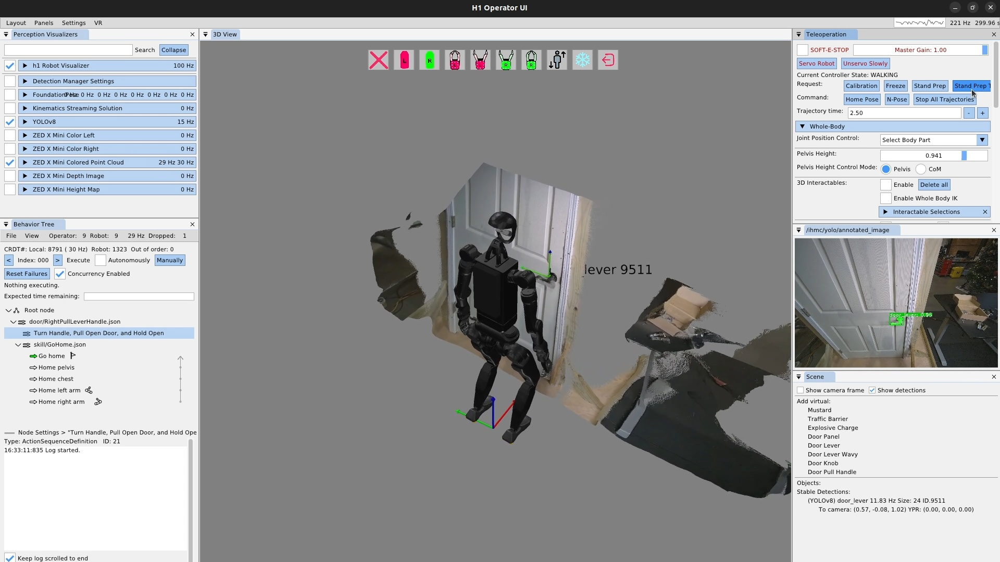
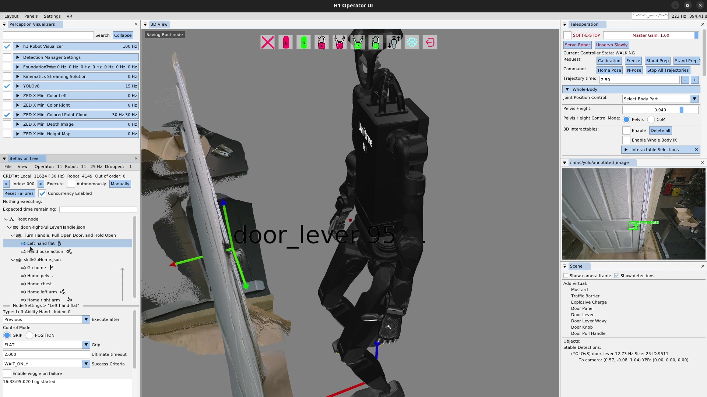
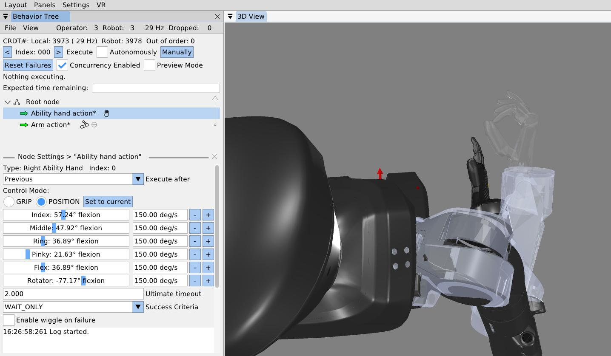
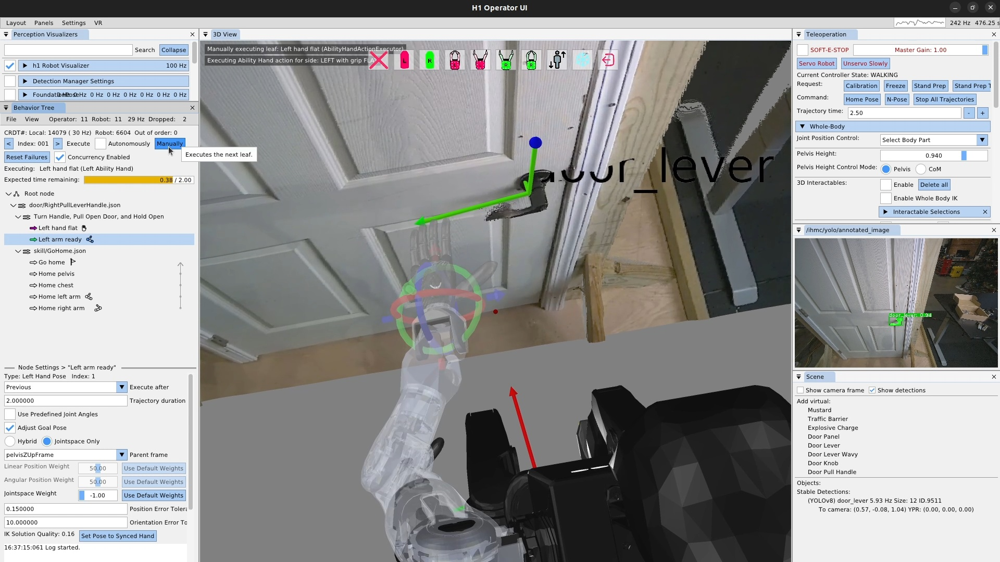
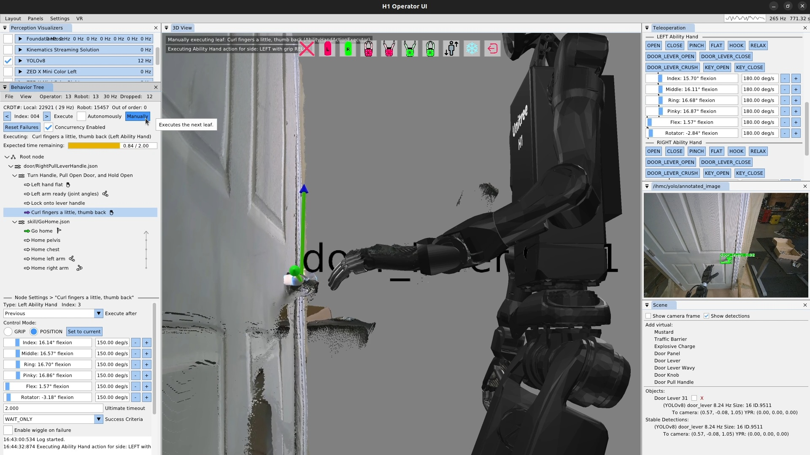
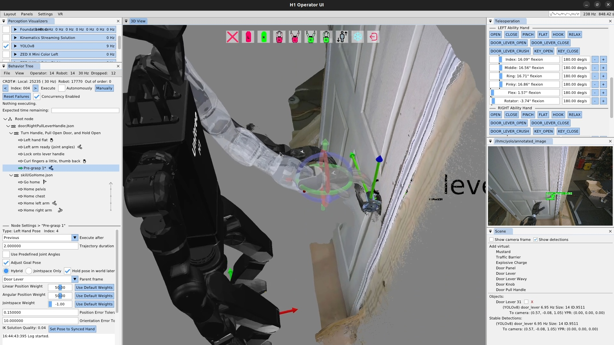
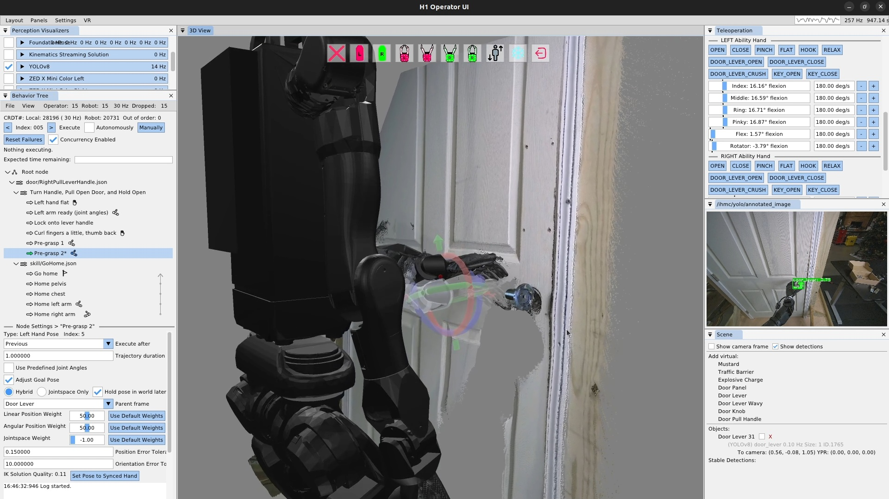
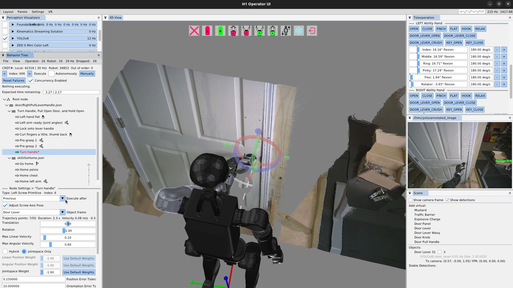
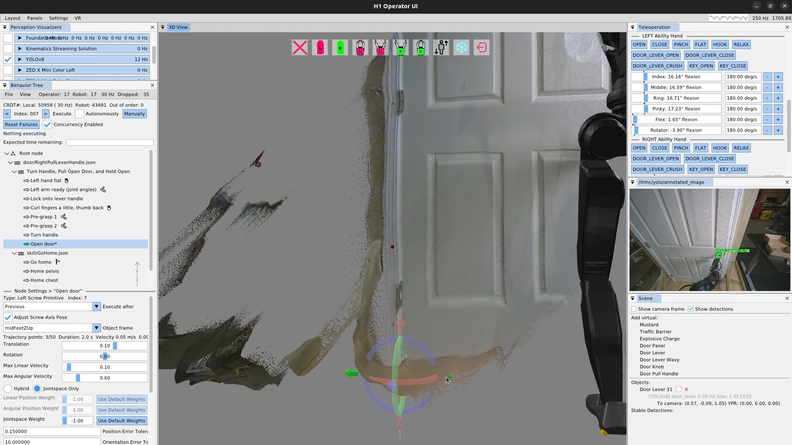
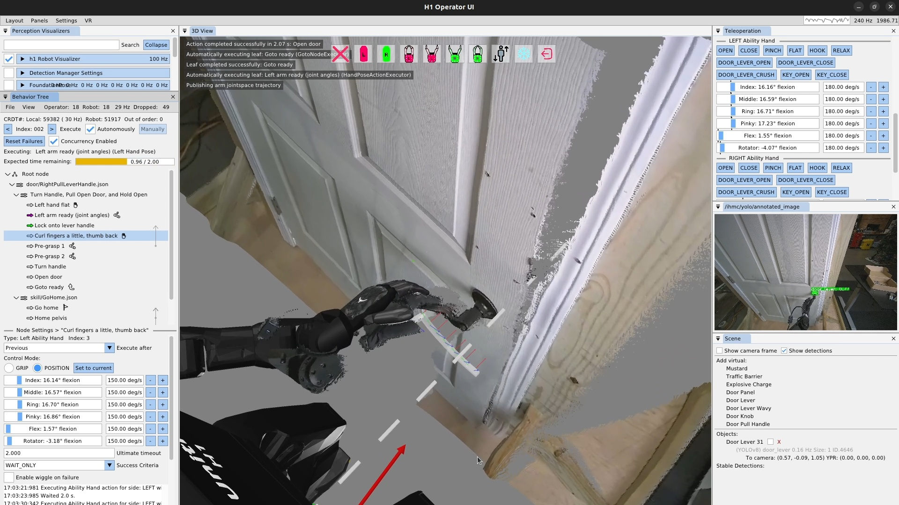

6.9. Real Robot Example: Repeated Door Opening
In this final section of the usage guide, we’ll walk through a real robot authoring session in which we created a repeated door opening behavior from scratch in 32 minutes. For this experiment, we used the Unitree H1-2 robot. At the end of the authoring phase, we immediately entered a reliability test where we performed over 30 successful door openings with continuous autonomy. We didn’t run it until failure, just until we got bored.
6.9.1. Starting Things Up
Starting things up typically requires powering on the robot and the operator computer. In this guide we’ll assume the robot is tetherless but starts on a hoist to get it into its initial standing state. We’ll assume powering on the robot will also power the computers and that they turn on and that the motors have power.
After the robot’s on-board computers have started, we will deploy the latest version of the control and autonomy software if necessary. Once that is done, we launch the control and autonomy code on the robot via an SSH command line session and start the robot operator interface. The next step is to set the robot down and transition the controller to walking. We have a stand prep state and a walking state, with buttons in the operator interface to perform those transitions.
6.9.2. Standing and the Operator Interface

The robot should now be standing, and the operator interface should be showing the robot state and perception data. It should look like Figure 6.33. At this point we check a couple of things to make sure everything is ready to go:
-
The robot visualizer is enabled via the checkbox, the robot is visible in the 3D scene, and the update frequency is as expected, in this case 100 Hz.
-
YOLOv8 is enabled with the checkbox and is running at some frequency in the 5-20 Hz range.
-
The ZED X Mini colored point cloud is enabled with the checkbox, is running at 30 Hz and is being updated in the 3D scene.
-
The YOLO annotated image is showing, with any detections shown that you would expect, in this case, the door lever and that it is at the expected confidence level.
-
The behavior tree view shows the synchronization frequency at around 30 Hz.
-
Stable detections appear for the YOLO detections in the scene panel.
To start, we’ve created sequence nodes for our door opening behavior, with the top level being saved to JSON with the “*.json” extension. Saving the behavior frequently is important to avoid losing work. We’ve also loaded the go home skill as a convenient way to reset the robot when we need to.
6.9.3. The Ability Hand Action

We will be using the left arm and hand to turn the lever and open the door.
The first thing we need to do is specify that the finger configuration should be “flat hand” at the start.
To do this, we add a left Ability Hand action, as shown in Figure 6.34, and set the “grip” field to FLAT.
There are several common grip types available as presets, including OPEN, CLOSE, PINCH, FLAT, HOOK, RELAX, DOOR_LEVER_OPEN, DOOR_LEVER_CLOSE, DOOR_LEVER_CRUSH, KEY_OPEN, and KEY_CLOSE.

It is also possible to set the individual finger joint angles for an Ability Hand action, as shown in Figure 6.35. The Ability Hand has six degrees of freedom, each with a slider and a velocity setting. If the Ability Hand comes before an arm action and is concurrent with that arm action, it can be previewed as it is tuned, as shown in the figure.
6.9.4. Arm Ready Action

Next, we’ll add a “left arm ready” action, as shown in Figure 6.36, which gets the hand and arm into a state where we can start to approach the handle from a known configuration. Constraining the grasp approach in this way helps to robustify the behavior. Otherwise, the hand might come from varying angles and may result in finger-handle collisions or unreliable inverse kinematics solutions. The ready action brings the hand up from the robot’s side and to roughly the orientation used for grasping the handle, but keeping a 10 cm or so distance away from the handle and any collisions.
Additionally, we typically will use joint angles or a robot-relative hand pose to define the arm ready actions, as they don’t require a perceived object. This helps us in using the action as a reset, regardless of the state of the environment. We’ll reset back to this action later when testing out the door opening components. In this case, we define the hand pose in pelvis frame.

Next, we’ll create a scene action to lock on to the lever handle and another Ability Hand action to curl the fingers and pull the thumb out and back in preparation for handle contact. In Figure 6.37, we’ve already run the scene action and have tuned the finger positions. We used the sliders on the hand action to form our desired grasp for the lever handle. The Ability Hand rubber is actually grippy enough that we won’t need to close our fingers around the handle. We then execute the Ability Hand action.
6.9.5. Pre-Grasp Actions

In Figure 6.38, we create our “Pre-grasp 1” action. For this grasp, we will use two pre-grasp actions. The first one hovers the hand 3-4 cm above the handle so the fingers don’t hit the handle when getting into position. Avoiding finger collisions is important with our system, as it will try hard to get to the desired position. Given the somewhat delicate Ability Hand fingers, if you clip the fingers on things while moving the hands around, you run a real risk of breaking a finger. Plus, it’s just nice to not have unnecessary collision.
This pre-grasp action is the first time in this behavior we need to be fairly precise in the range of a centimeter or two. It can be difficult to gauge the hand’s pose with respect to the lever using the desktop monitor point cloud and first person view. It’s a little easier in VR with stereo vision. Since we weren’t using VR for this demo, we addressed the problem by sitting in line-of-sight to the robot. The tuning process for this pre-grasp action is presented in Figure 6.39.
6.9.6. Manipulation Action Tuning Process

We tune the first pre-grasp action until the only thing left to do to grasp the handle is to move the hand directly down such that it rests on the lever handle. Figure 6.40 shows us authoring this action. We repeat the visual guess-execute-inspect process for this pre-grasp action.
6.9.7. Turning a Door Handle

Now that our hand is resting on the door lever handle, it’s time to turn the lever and unlatch the door. This is accomplished using a screw primitive action, as shown in Figure 6.41. To tune a screw primitive, the first thing to do is set up the screw axis, which is the white dotted line shown in the figure. It is moved using a pose 3D gizmo, just like the hand. In general, the screw axis should be aligned with the rotational axis of the object you are manipulating. In practice, we tend to have to move it some to get the desired robot motion, which is, in the end, the important part. In addition to the axis, there are the translation and rotation amounts. In practice, we just have to use a tuning loop like in Figure 6.39 to guess at these values and re-execute until we get the desired result.
For door lever turning we typically leave translation at zero and adjust the rotation to be more than necessary. We also have to move the axis above and to the side opposite to the hand in order to result in a position controlled motion that achieves the necessary forces to turn the lever properly.
The iterative tuning process for a screw primitive requires an extra element for step two. Since the screw primitive is a motion relative to the hand’s current position, playing it back a second time will cause the hand to travel further and further along the helical motion profile, rather than resetting to the beginning. For this reason, we need to reset back to the next previous arm action, in this case pre-grasp 2, in order to re-execute the door lever turn action.
Additionally, for the door lever turning action, we must make sure the handle is turned enough to unlatch the door sufficiently. This is why we also perform a direct visual inspection of the latch as part of this tuning process.
6.9.8. Opening a Door

The door opening is done as another screw primitive action, but along a different axis: the door panel hinge. Aligning the screw axis to the door panel hinge is done using the point cloud as shown in Figure 6.42. It doesn’t have to be super precise – within a few centimeters in the X-Y axis and 5 degrees rotationally is fine.
For door opening, the tuning process is a bit easier than the lever turning. This is because the hand is fairly compliant to the door since it’s applying a force on the handle and there is no unlatching requirement on this one. The direction of the axis alignment will determine whether the screw rotation value for opening is positive or negative.
6.9.9. Looping a Behavior
Once we finish up the door opening action and execute it successfully, the repeated door opening behavior is pretty much done! We set the execute after field of the pre-grasp 1 action to the scene action to curl the fingers at the same time. Then, we add a goto action at the end that goes back to the beginning, to create an infinite loop. We then check the execute “Autonomously” checkbox and let it spin. This behavior executed 33 times in a row successfully before we stopped it.

In this guide, we have covered what all the main action types do and how to use them. All behaviors presented in this thesis build on these basic concepts to create more complete and longer-horizon behaviors. In Evaluation, we evaluate these behaviors against our hypotheses and the literature.